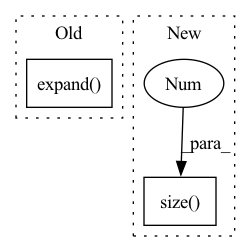

Pattern ID :37592
Before Change
dist = pairwise_euclidean_distance(inputs_col, inputs_row)
// split the positive and negative pairs
pos_mask = targets_col.expand(
targets_row.shape[0], n
) .t() == targets_row.expand(n, targets_row.shape[0])
neg_mask = ~pos_mask
// For each anchor, find the hardest positive and negative
dist_ap, dist_an = [], []After Change
dist_mat = pairwise_euclidean_distance(f, xbm_f)
// hard examples mining
n, m = f.size(0), xbm_f.size(0 )
identity_mat = labels.expand(m, n).t().eq(xbm_labels.expand(n, m)).float()
dist_ap, dist_an = hard_examples_mining(dist_mat, identity_mat)
// Compute ranking hinge lossIn pattern: SUPERPATTERN
Frequency: 4
Non-data size: 2
Instances Fragment ID: 108137344
Project Name: thuml/transfer-learning-library
Commit Name: 0f8f51c4b2fac78edf87e29764e4da3deec6f65f
Time: 2021-10-14
Author: 57670068+tsingcbx99@users.noreply.github.com
File Name: common/vision/models/reid/loss.py
M Class Name: TripletLossXBM
N Class Name: TripletLossXBM
M Method Name: forward(5)
N Method Name: forward(5)
M Parent Class: nn.Module
N Parent Class: nn.Module
M File Name: common/vision/models/reid/loss.py
N File Name: common/vision/models/reid/loss.py
M Start Line: 132
M End Line: 152
N Start Line: 154
N End Line: 162
Before Change
conc_feats_out_dict, inp, vidf_outs
)
num_cmp_msk = inp["num_cmp_msk"].view(
B, num_cmp, 1, 1
).expand(
B, num_cmp, num_srl_args,
self.num_sampled_frm * self.num_prop_per_frm
) .contiguous(
).view(*conc_feats_out.shape)
srl_ind_msk = inp["srl_arg_inds_msk"]After Change
prop_seg_feats, inp
)
num_cmp = inp["new_srl_idxs"].size(1 )
if srl_arg_lstm_encoded.size(1) == 1 and num_cmp > 1:
srl_arg_lstm_encoded = srl_arg_lstm_encoded.expand(
-1, num_cmp, -1, -1
) Fragment ID: 108137338
Project Name: theshadow29/vognet-pytorch
Commit Name: 26484dcff3c40078e4e23cee7edad5699682e5fe
Time: 2020-03-02
Author: ark.sadhu2904@gmail.com
File Name: code/mdl_conc.py
M Class Name: ConcSEP
N Class Name: ConcSEP
M Method Name: forward(2)
N Method Name: forward(2)
M Parent Class: ConcBase
N Parent Class: ConcBase
M File Name: code/mdl_conc.py
N File Name: code/mdl_conc.py
M Start Line: 146
M End Line: 220
N Start Line: 173
N End Line: 202
Before Change
def knn_feat(self, feat, knn_indices):
uns = feat.unsqueeze(-3)
ex = uns.expand(feat.shape[0], knn_indices.shape[1], feat.shape[-2], feat.shape[-1])
return torch.gather(ex, -2, knn_indices.expand( *knn_indices.shape[:-1], feat.shape[-1]) )
def forward(self, points, in_feat, k, stride):
// points [b, n, 3] in_feat [b, n, c_in] out [b, n, k // stride, c_in]After Change
return knn_indices[..., ::stride] // [*, Q, K"]
def knn_feat(self, feat, knn_indices):
return (feat[torch.arange(feat.size(0 ) ).unsqueeze(-1), knn_indices.flatten(1), :]
.reshape(feat.shape[0], knn_indices.shape[1], -1, feat.shape[-1]))
def forward(self, points, in_feat, k, stride): Fragment ID: 108137342
Project Name: qq456cvb/sprin
Commit Name: c382e70c805017b870560710a677a3064a4ce39b
Time: 2021-11-12
Author: flandre@scarletx.cn
File Name: sprin/model.py
M Class Name: Neighbourhood
N Class Name: Neighbourhood
M Method Name: knn_feat(3)
N Method Name: knn_feat(3)
M Parent Class: nn.Module
N Parent Class: nn.Module
M File Name: sprin/model.py
N File Name: sprin/model.py
M Start Line: 134
M End Line: 136
N Start Line: 133
N End Line: 134
Before Change
// batch sizes reside on the CPU by default -> we need to bring them to GPU
lengths = lengths.to(target.device)
else:
lengths = torch.LongTensor([target.size(1)], device=target.device).expand( target.size(0))
assert not target.requires_grad
// calculate loss with "none" reduction
if target.ndim == 3:After Change
// batch sizes reside on the CPU by default -> we need to bring them to GPU
lengths = lengths.to(target.device)
else:
lengths = torch.ones(target.size(0), device=target.device, dtype=torch.long) * target.size(1 )
assert not target.requires_grad
// calculate loss with "none" reduction
if target.ndim == 3: Fragment ID: 108137341
Project Name: jdb78/pytorch-forecasting
Commit Name: 94dc081548690e45cdc6b0d68420461ecf502641
Time: 2020-08-23
Author: beitner.jan@bcg.com
File Name: pytorch_forecasting/metrics.py
M Class Name: MultiHorizonMetric
N Class Name: MultiHorizonMetric
M Method Name: forward(3)
N Method Name: forward(3)
M Parent Class: Metric
N Parent Class: Metric
M File Name: pytorch_forecasting/metrics.py
N File Name: pytorch_forecasting/metrics.py
M Start Line: 121
M End Line: 121
N Start Line: 121
N End Line: 121